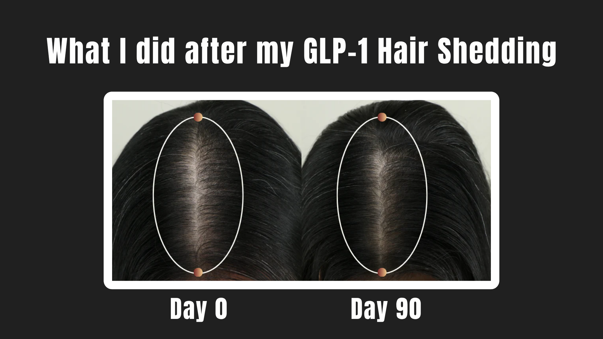
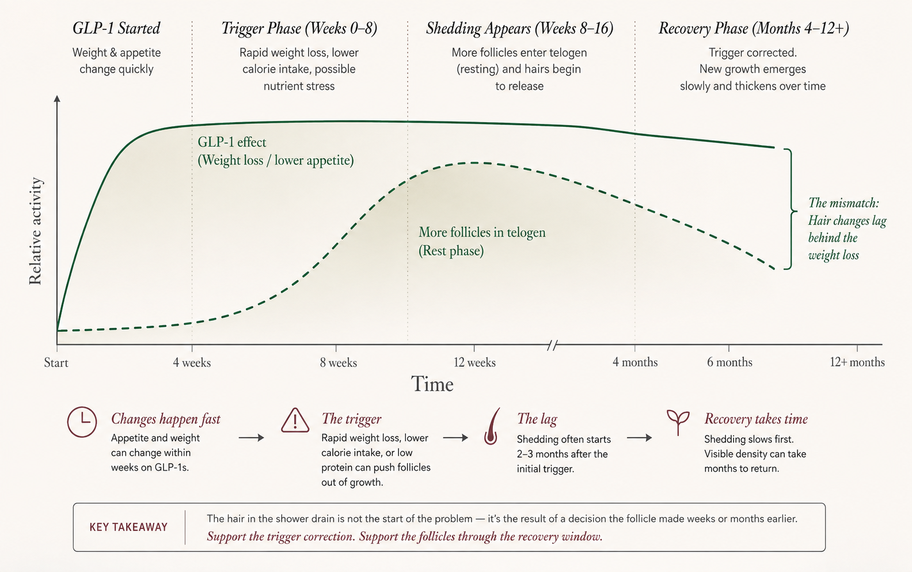

- Why the shedding arrives late
- What rapid weight loss can signal to the follicle
- Why RE:YOU became my choice for the recovery window
The hair loss is real. Direct follicle damage is not established.
This is not just an internet rumor.
In Wegovy studies, hair loss was reported in 3% of participants compared with 1% on placebo. Zepbound's prescribing information goes a step further and states that reported hair loss was associated with weight reduction. Current evidence has not established that GLP-1 medications directly damage the hair follicle.
That distinction changed the way I looked at the problem.
The medication may be part of the context. The more convincing explanation for many people is the physical and nutritional shift happening around it.
The shedding is late. The hair-cycle shift happens first.
Appetite can change quickly on a GLP-1. Weight can move quickly too. Hair does neither.
Rapid weight loss, a sustained calorie deficit, inadequate protein, illness, or another physical stressor can push more follicles out of active growth and into a resting phase. Those hairs stay in place for weeks before they release. That is why the shedding often becomes visible two to three months after the original trigger.

The hair in the drain is not the moment the problem started. It is the moment an earlier follicle decision became visible.
It is not primarily a damaged-strand problem. It is a timing problem inside the follicle.
Telogen effluvium is typically diffuse and non-scarring. Non-scarring matters — in the usual TE pattern, the follicle has not been permanently destroyed. It has been pushed off its normal schedule. Instead of follicles entering growth, rest, and release at staggered times, too many reach the release phase together.
Correcting the trigger is essential.
Eating enough protein today does not hand back last month's density tomorrow.
Correcting the trigger can help stop more follicles from being pushed off course. But the follicles already moving through rest still need time. New hair also needs months to emerge and become long enough to visibly change the part or ponytail.
That left me with two separate jobs.
Stabilize total intake, prioritize protein, review the pace of weight loss, and ask whether labs are appropriate if shedding is heavy or prolonged.
Support the intact follicles moving through the next growth cycles.
One addresses why the shift happened.
The other addresses what the follicles do next.
I did not want an approach that pretended nutrition did not matter.
I also did not want to leave the recovery window completely passive.
I ruled out products that mainly conditioned the visible strand or made the scalp feel moisturized without showing what they did at the follicle level.
Then there was the practical issue. I kept picturing the same bathroom light that made the part look wider. A heavy or oily serum would make that area look worse immediately, even if it promised a future benefit. I knew I would not stay consistent with that.
I wanted the science to reach beyond surface conditioning. The texture still had to disappear into a normal morning.
Meet RE:YOU. Built for the follicles still moving through the reset.
RE:YOU was developed around two parts of hair biology that continue to matter after a shedding trigger: the cells inside the follicle that help direct the growth cycle, and the biological environment those cells depend on.
Inside the follicle is a cellular "control room."
At the base of each follicle are dermal papilla cells. They are not the hair strand itself — they help regulate how the follicle behaves, including its size, metabolic activity, regenerative capacity, and movement through the hair cycle.
Age, stress, and environmental disruption can reduce their growth potential and metabolic activity.
In laboratory testing across multiple human donors, NOVOGRO™ 623 and 624 increased dermal papilla cell viability. In a three-dimensional follicle organoid model, both molecules produced greater follicle-like sprouting than minoxidil over ten days.
The control room still needs a support network.
The follicle does not operate in isolation. The surrounding cells provide metabolic and regenerative signals that help the follicle respond to changing oxygen and energy demands.
One important signal is HIF-1α. Think of HIF-1α as part of the cell's low-oxygen response system — when it remains active, it can turn on downstream programs tied to metabolic adaptation and vascular support. PHD2 normally acts like a brake by marking HIF-1α for breakdown.
In laboratory testing, NOVOGRO™ 273 inhibited PHD2, produced faster and more sustained HIF-1α activation, and increased two downstream markers: VEGF-A and lactate. Those markers are associated with vascular-supportive signaling and cellular energy metabolism.
Built around the biology. Tested against minoxidil.
RE:YOU was evaluated in a randomized, double-blinded study involving 190 women with visible hair thinning. It was not compared only with a placebo. The control was minoxidil.
The results, at a glance.
What impressed me is that did not rely on one type of evidence. The study combined full-HD machine imaging, independent expert assessment, standardized comb testing, and validated participant questionnaires.
Telogen effluvium usually leaves the follicle intact.
That is the key connection. RE:YOU cannot go back in time and prevent the appetite drop, rapid weight loss, illness, or nutritional stress that shifted the cycle. It can support the follicle that remains.
I see it as an active recovery layer: one that supports the cells helping guide the next cycle and the environment around them while the underlying trigger is being corrected.
What I would want to know before starting.
Some TE improves without a serum
Once the trigger resolves, telogen effluvium is often self-limiting. I still prefer supporting the follicles during that period rather than simply waiting, but RE:YOU is not necessary for every person who experiences temporary shedding.
The trial was not GLP-1 specific
The current study enrolled women with visible thinning. RE:YOU is designed for people of all genders, but the 90-day clinical findings should be described according to the population that was actually studied.
This is a 90-day decision
One bottle lasts about 30 days. Clinical outcomes were measured at 90 days, so a fair evaluation requires daily consistency across three bottles, not sporadic use for a few weeks.
It is premium-priced
The science and study design come with a higher cost than generic minoxidil or a basic cosmetic serum. That matters when the routine needs to continue for months.
Reactive scalps should patch test
The formula is water-based and lightweight, but it does contain Alcohol Denat. and a small fragrance blend. I would introduce it cautiously on a highly reactive or actively inflamed scalp.
The long-term data set is still developing
RE:YOU is newer than minoxidil. The 90-day results are strong, but I would still like to see complete longer-term findings and more independent replication as the technology matures.
The trigger and the recovery are two different jobs.
Nutrition, medical guidance, and a sustainable pace of weight loss address why the hair cycle shifted. RE:YOU is the serum I would use to support what the intact follicles do next.
It is not a cure for "GLP-1 hair loss." It is a clinically tested, biologically relevant way to support reduced shedding and greater density during a recovery period that otherwise asks for a lot of waiting.
Less measured shedding. More visible density.
What readers ask me most about GLP-1
Does a GLP-1 directly damage the follicle?
That has not been established. Hair loss appears more frequently in some GLP-1 weight-loss trials, but the delayed timing and association with weight reduction are more consistent with telogen effluvium for many users.
Should I stop my GLP-1 because of shedding?
Not without speaking to the clinician who prescribed it. The cause, severity, benefits of treatment, pace of weight loss, and nutritional status all matter.
How long can telogen effluvium last?
It commonly becomes visible two to three months after a trigger. Acute TE is often described as lasting around six months, but visible density can take longer to return because new hairs need time to lengthen.
When should I see a dermatologist?
Seek evaluation for defined bald patches, pain, burning, marked inflammation, scarring, recurrent episodes, or shedding that does not follow the expected TE timeline.
Note: Wegovy and Zepbound hair-loss figures and language are drawn from their FDA-approved prescribing information. RE:YOU clinical results are based on the brand's own 190-participant study; individual results vary. RE:YOU has not been clinically tested specifically for GLP-1-related hair shedding. This is not a substitute for medical advice — talk to a doctor about significant, prolonged, or patterned hair loss.